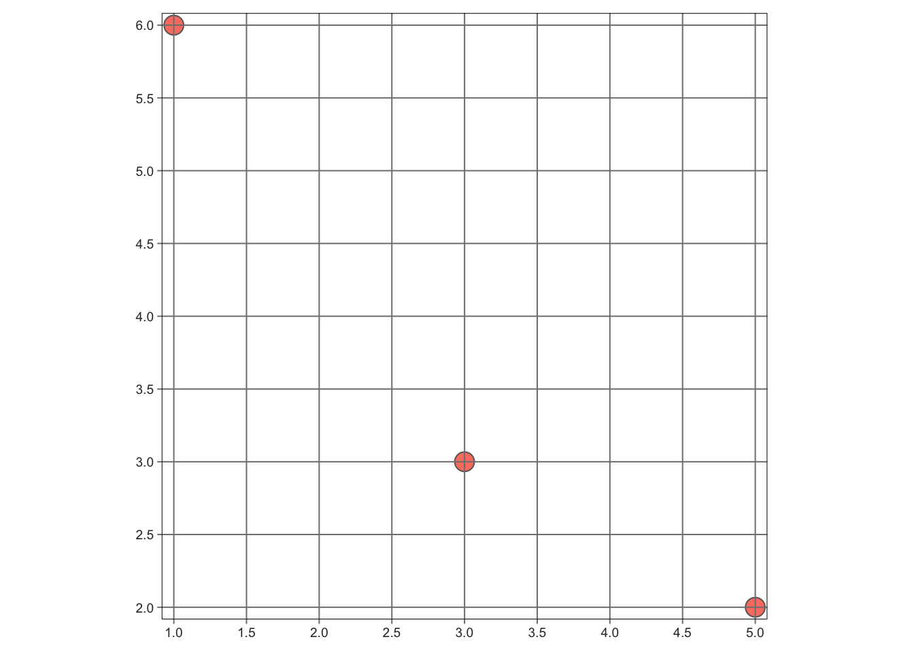
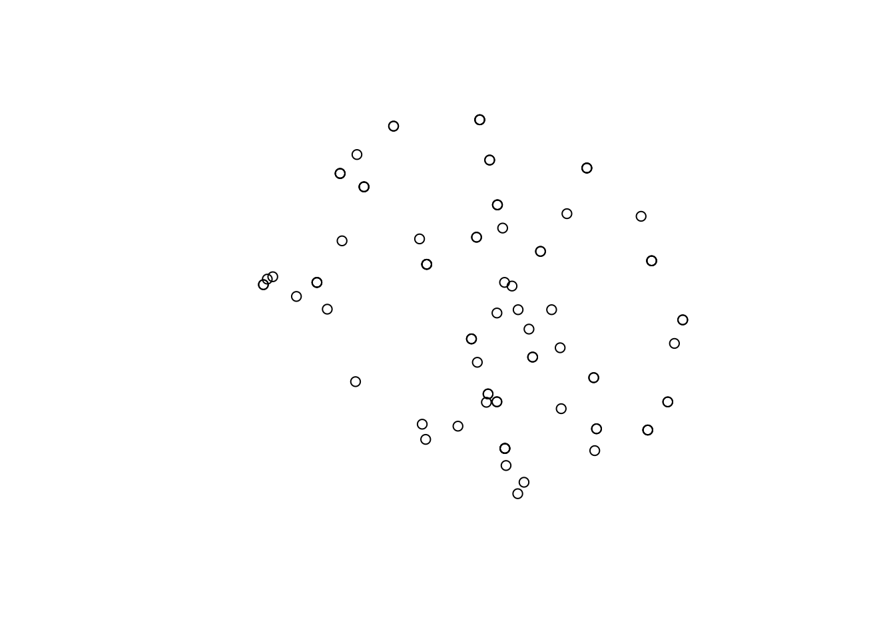
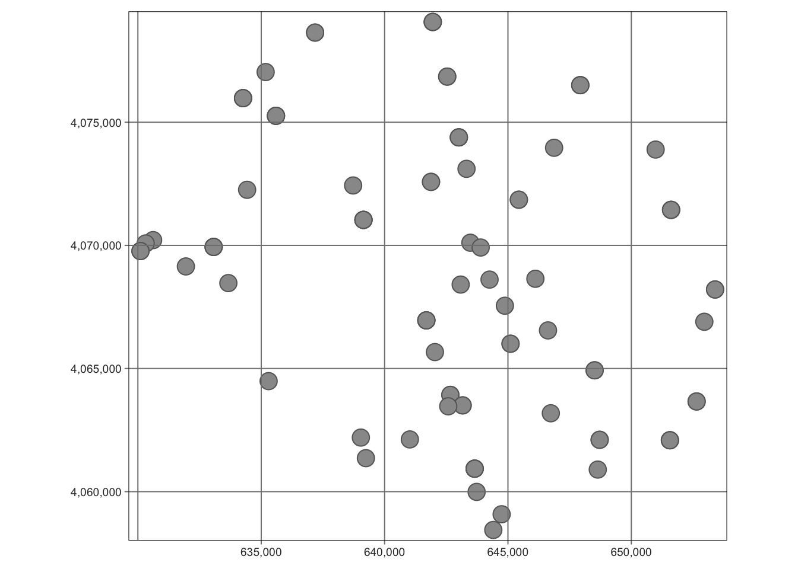
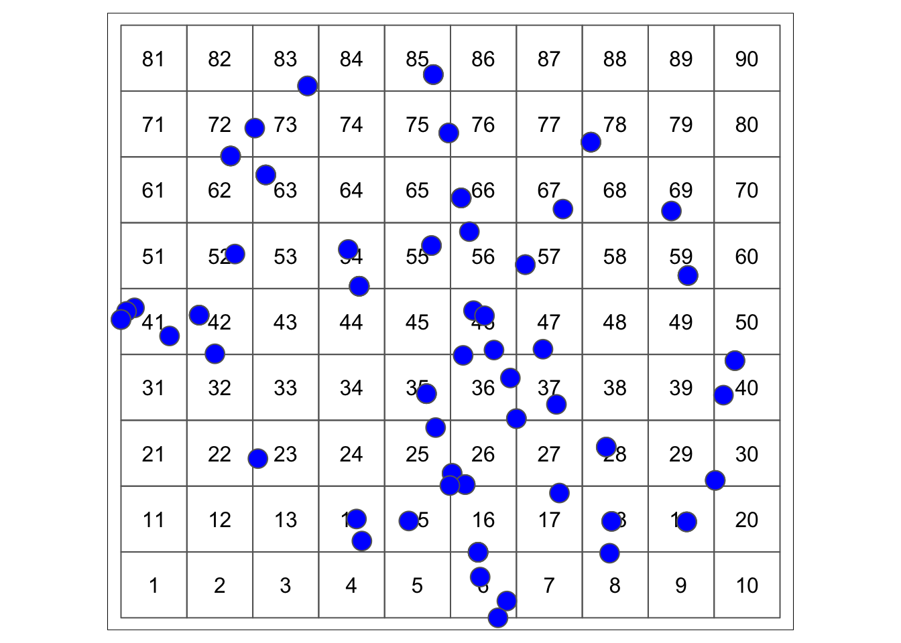
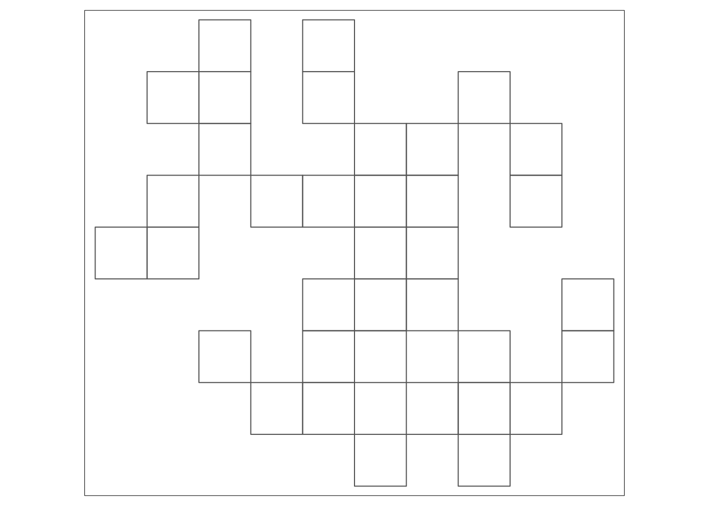
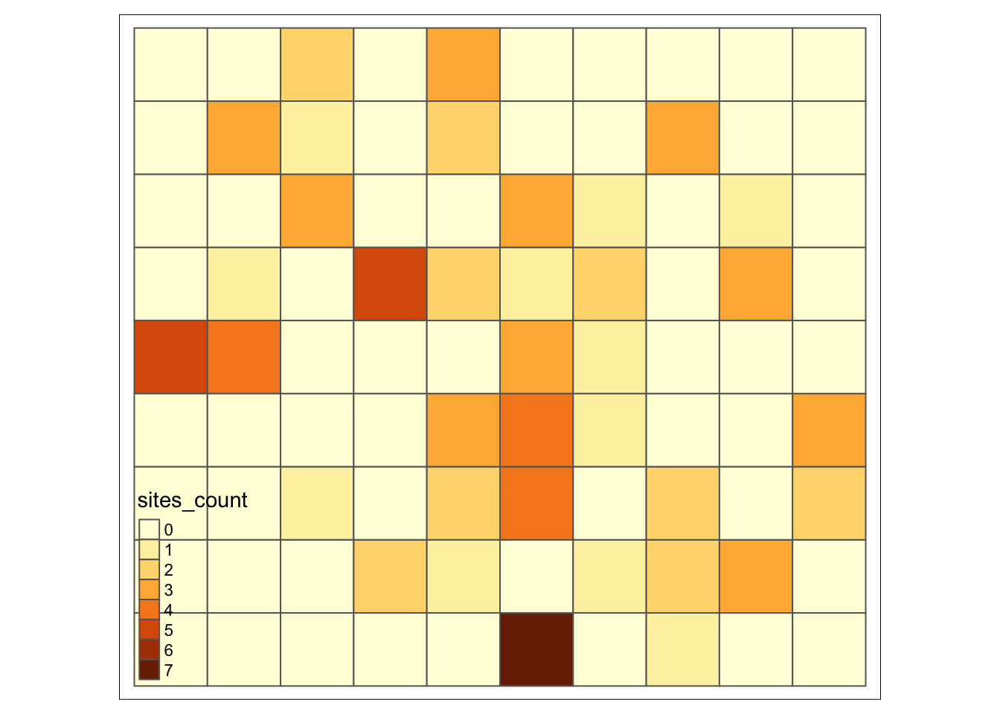
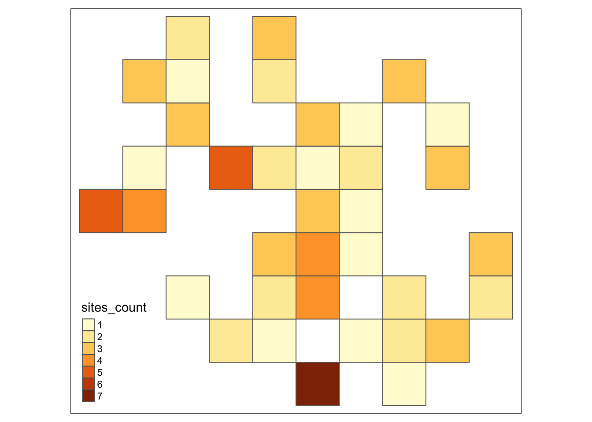
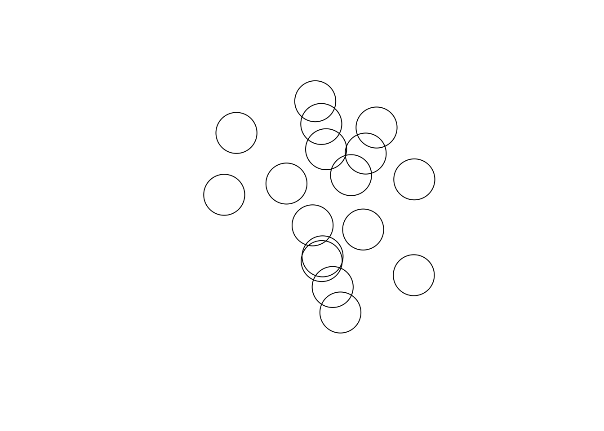
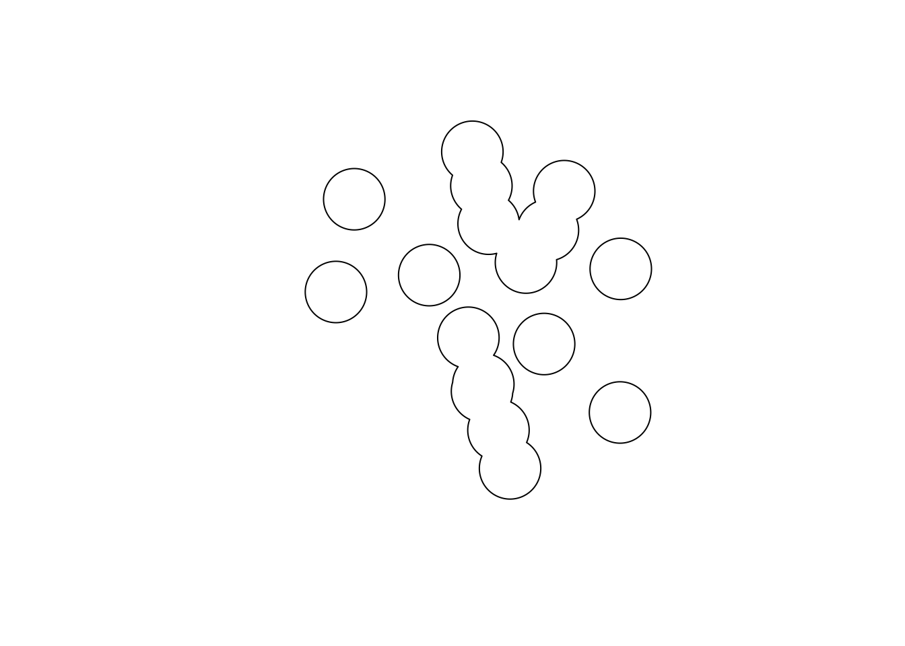
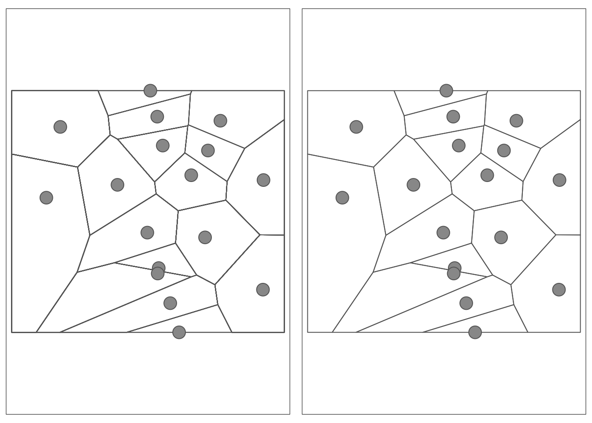

library(sf) # vector representation
library(dplyr) # data manipulation
library(tmap) # mapping
library(units) # units conversionArchaeological Spatial Analysis in R
Lesson 2
Learning Objectives
learn about simple feature package
deal with coordinate reference system
create vector data
manipulate vector data
Introduction
This lesson introduce basics of working with vector data in R.
Background Reading
Please read and work through the code in the following chapters:
- Lovelace R, Nowosad K, Muenchow J, Geocomputation with R, Chapter 2.2, 2.4, 3.2, 4.2 and 5.2 - link
Packages
Start with loading R packages that we will use in our class.
Simple Features
{sf} package is an R implementation of Open Geo-spatial Consortium (OGC) standard called Simple Features. It is a vector model representing world features as geometry types.
The main geometry types are as follow:
POINT
LINESTRING
POLYGON
MULTIPOINT
MULTILINESTRING
MULTIPOLYGON
GEOMETRYCOLLECTION

There are three hierarchical classes in sf package:
sfg- a single geometrysfc- a a list - column with geometry for each recordsf- a table with non-geometry and geometry attributes

In addition, sf object can store information on dimension, bounding box and coordinate reference system.
Now, we are going to construct a sf classes from scratch
First, create a data frame with sites ( from lesson - 0).
# a collection of same lenth vectors
#site ids
site_id = c("THS_1_0_0", "THS_2_0_0", "THS_3_0_0")
# period of site
period = c("Iron Age", "Iron Age", "Bronze Age")
# site size in hectars
size_ha = c(18.0, 5.6, 7.2)
# construct df
sites <- data.frame(site_id, size_ha, period)In next step we will construct and add geometry attributes for our sites.
# function st_point() creates a single point from numeric vectors
# we need three points for each site record
p1 = st_point(c(5,2))
p2 = st_point(c(3,3))
p3 = st_point(c(1,6))
# function st_sfc() creates a column
points_sfc = st_sfc(p1,p2,p3)
# function st_sf() will extend the df by adding geometry column
sites_sf = st_sf(sites, geometry = points_sfc)
# plot
# plot(sites_sf$geometry)
# print(sites_sf)
# or using tmap
tm_shape(sites_sf) +
tm_symbols(col = "salmon") +
tm_grid()
A very common task is to convert a table (e.g. in csv format) that contains columns with X and Y coordinate into a point dataset. It could be achieved using st_as_sf() package. We
# import the csv
tbs_sites = read.csv("../data/tbs_sites.csv")
# check structure
str(tbs_sites)'data.frame': 88 obs. of 12 variables:
$ fid : int 1 3 4 7 8 9 10 11 12 13 ...
$ id : chr "TBS_1_0_0" "TBS_1_0_0" "TBS_1_0_0" "TBS_11_0_0" ...
$ size_ha : num 45 45 24 0.394 0.394 ...
$ start_date: int -900 -1600 -2550 -1200 -1600 -1200 -1600 -1200 -1200 -1200 ...
$ end_date : int -300 -1200 -2100 -550 -1200 -550 -1200 -550 -600 -600 ...
$ longitude : num 40.6 40.6 40.6 40.7 40.7 ...
$ latitude : num 36.7 36.7 36.7 36.7 36.7 ...
$ source : chr "Ur and Wilkinson 2008" "Ur and Wilkinson 2008" "Ur and Wilkinson 2008" "Ur and Wilkinson 2008" ...
$ code : chr "TBS" "TBS" "TBS" "TBS" ...
$ period : chr "Iron Age" "Late Bronze Age" "Late Third Millennium" "Iron Age" ...
$ name : chr "Tell Beydar" "Tell Beydar" "Tell Beydar" "" ...
$ tell : chr "true" "true" "true" "" ...# check first entries
head(tbs_sites, n = 1) fid id size_ha start_date end_date longitude latitude
1 1 TBS_1_0_0 45 -900 -300 40.58699 36.73775
source code period name tell
1 Ur and Wilkinson 2008 TBS Iron Age Tell Beydar true# a useful command to check external software used by sf
# sf::sf_extSoftVersion()Before continuing we will learn about Coordinate Reference System (CRS) of our data.
It could be either geographic or projected. We can create a crs object it by passing an EPSG code to st_crs() function.
EPSG stand for European Petroleum Survey Group responsible for maintaining a database of coordinate systems.
# provide the EPSG code using st_crs()
crs_wgs84 = st_crs(4326) # WGS84 has EPSG code 4326
# it is a so colled crs object
class(crs_wgs84)[1] "crs"str(crs_wgs84)List of 2
$ input: chr "EPSG:4326"
$ wkt : chr "GEOGCRS[\"WGS 84\",\n ENSEMBLE[\"World Geodetic System 1984 ensemble\",\n MEMBER[\"World Geodetic Sys"| __truncated__
- attr(*, "class")= chr "crs"# access the wkt element
cat(crs_wgs84$wkt)GEOGCRS["WGS 84",
ENSEMBLE["World Geodetic System 1984 ensemble",
MEMBER["World Geodetic System 1984 (Transit)"],
MEMBER["World Geodetic System 1984 (G730)"],
MEMBER["World Geodetic System 1984 (G873)"],
MEMBER["World Geodetic System 1984 (G1150)"],
MEMBER["World Geodetic System 1984 (G1674)"],
MEMBER["World Geodetic System 1984 (G1762)"],
MEMBER["World Geodetic System 1984 (G2139)"],
ELLIPSOID["WGS 84",6378137,298.257223563,
LENGTHUNIT["metre",1]],
ENSEMBLEACCURACY[2.0]],
PRIMEM["Greenwich",0,
ANGLEUNIT["degree",0.0174532925199433]],
CS[ellipsoidal,2],
AXIS["geodetic latitude (Lat)",north,
ORDER[1],
ANGLEUNIT["degree",0.0174532925199433]],
AXIS["geodetic longitude (Lon)",east,
ORDER[2],
ANGLEUNIT["degree",0.0174532925199433]],
USAGE[
SCOPE["Horizontal component of 3D system."],
AREA["World."],
BBOX[-90,-180,90,180]],
ID["EPSG",4326]]# return user input as a number
crs_wgs84$epsg[1] 4326# PROJ string - old way - means packages / code was not updated
crs_wgs84$proj4string[1] "+proj=longlat +datum=WGS84 +no_defs"Now we can create simple feature object.
# create a sf object
# specify data frame - tbs_sites
# specify column names with x an y
# specify CRS
tbs_sites_sf = st_as_sf(tbs_sites, coords = c("longitude", "latitude"), crs = 4326)
plot(tbs_sites_sf$geometry)
We can transform our data to other projection using st_transform() function
# transform from geodetic to projected
# provide the EPSG code using st_crs() - https://epsg.io/32637
UTM_Zone_37N = st_crs(32637) # IGRS_UTM_Zone_38N EPSG: 3891
# transform sites from
tbs_sites_sf = st_transform(tbs_sites_sf, UTM_Zone_37N)
# look at crs
st_crs(tbs_sites_sf)Coordinate Reference System:
User input: EPSG:32637
wkt:
PROJCRS["WGS 84 / UTM zone 37N",
BASEGEOGCRS["WGS 84",
ENSEMBLE["World Geodetic System 1984 ensemble",
MEMBER["World Geodetic System 1984 (Transit)"],
MEMBER["World Geodetic System 1984 (G730)"],
MEMBER["World Geodetic System 1984 (G873)"],
MEMBER["World Geodetic System 1984 (G1150)"],
MEMBER["World Geodetic System 1984 (G1674)"],
MEMBER["World Geodetic System 1984 (G1762)"],
MEMBER["World Geodetic System 1984 (G2139)"],
ELLIPSOID["WGS 84",6378137,298.257223563,
LENGTHUNIT["metre",1]],
ENSEMBLEACCURACY[2.0]],
PRIMEM["Greenwich",0,
ANGLEUNIT["degree",0.0174532925199433]],
ID["EPSG",4326]],
CONVERSION["UTM zone 37N",
METHOD["Transverse Mercator",
ID["EPSG",9807]],
PARAMETER["Latitude of natural origin",0,
ANGLEUNIT["degree",0.0174532925199433],
ID["EPSG",8801]],
PARAMETER["Longitude of natural origin",39,
ANGLEUNIT["degree",0.0174532925199433],
ID["EPSG",8802]],
PARAMETER["Scale factor at natural origin",0.9996,
SCALEUNIT["unity",1],
ID["EPSG",8805]],
PARAMETER["False easting",500000,
LENGTHUNIT["metre",1],
ID["EPSG",8806]],
PARAMETER["False northing",0,
LENGTHUNIT["metre",1],
ID["EPSG",8807]]],
CS[Cartesian,2],
AXIS["(E)",east,
ORDER[1],
LENGTHUNIT["metre",1]],
AXIS["(N)",north,
ORDER[2],
LENGTHUNIT["metre",1]],
USAGE[
SCOPE["Engineering survey, topographic mapping."],
AREA["Between 36°E and 42°E, northern hemisphere between equator and 84°N, onshore and offshore. Djibouti. Egypt. Eritrea. Ethiopia. Georgia. Iraq. Jordan. Kenya. Lebanon. Russian Federation. Saudi Arabia. Somalia. Sudan. Syria. Turkey. Ukraine."],
BBOX[0,36,84,42]],
ID["EPSG",32637]]# look at sf class
tbs_sites_sfSimple feature collection with 88 features and 10 fields
Geometry type: POINT
Dimension: XY
Bounding box: xmin: 630104.6 ymin: 4058444 xmax: 653395.7 ymax: 4079071
Projected CRS: WGS 84 / UTM zone 37N
First 10 features:
fid id size_ha start_date end_date source code
1 1 TBS_1_0_0 45.000000 -900 -300 Ur and Wilkinson 2008 TBS
2 3 TBS_1_0_0 45.000000 -1600 -1200 Ur and Wilkinson 2008 TBS
3 4 TBS_1_0_0 24.000000 -2550 -2100 Ur and Wilkinson 2008 TBS
4 7 TBS_11_0_0 0.393999 -1200 -550 Ur and Wilkinson 2008 TBS
5 8 TBS_11_0_0 0.393999 -1600 -1200 Ur and Wilkinson 2008 TBS
6 9 TBS_13_0_0 1.812999 -1200 -550 Ur and Wilkinson 2008 TBS
7 10 TBS_13_0_0 1.812999 -1600 -1200 Ur and Wilkinson 2008 TBS
8 11 TBS_14_0_0 0.770000 -1200 -550 Ur and Wilkinson 2008 TBS
9 12 TBS_16_0_0 0.797998 -1200 -600 Ur and Wilkinson 2008 TBS
10 13 TBS_18_0_0 1.078999 -1200 -600 Ur and Wilkinson 2008 TBS
period name tell geometry
1 Iron Age Tell Beydar true POINT (641692.6 4066955)
2 Late Bronze Age Tell Beydar true POINT (641692.6 4066955)
3 Late Third Millennium Tell Beydar true POINT (641692.6 4066955)
4 Iron Age POINT (648513.2 4064927)
5 Late Bronze Age POINT (648513.2 4064927)
6 Iron Age POINT (653395.7 4068208)
7 Late Bronze Age POINT (653395.7 4068208)
8 Iron Age POINT (652959.5 4066898)
9 Iron Age POINT (643729.7 4059990)
10 Iron Age POINT (644743.6 4059082)# plot the geometry
# plot(tbs_sites_sf$geom)
# or plot with tmap and add grid to see grid reference values in metres
tm_shape(tbs_sites_sf) +
tm_symbols() +
tm_grid()
Now we can save our feature as in spatial format
# save to geopackage
st_write(tbs_sites_sf, "../data/vect/data.gpkg", layer = "tbs_sites", delete_layer = TRUE)Deleting layer `tbs_sites' using driver `GPKG'
Writing layer `tbs_sites' to data source `../data/vect/data.gpkg' using driver `GPKG'
Writing 88 features with 10 fields and geometry type Point.# have a look at content to see the layer
st_layers("../data/vect/data.gpkg",do_count = TRUE)Driver: GPKG
Available layers:
layer_name geometry_type features fields crs_name
1 sites_point Point 88 11 WGS 84 / UTM zone 37N
2 sites_polygon Multi Polygon 323 6 WGS 84 / UTM zone 37N
3 survey_extent Multi Polygon 1 2 WGS 84 / UTM zone 37N
4 hollow_ways Multi Line String 568 4 WGS 84 / UTM zone 37N
5 aoi Polygon 1 5 WGS 84 / UTM zone 37N
6 geology Multi Polygon 7 1 WGS 84 / UTM zone 37N
7 rimes_rivers Multi Line String 1 8 WGS 84 / UTM zone 37N
8 agri_area_ltm Multi Polygon 1 1 WGS 84 / UTM zone 37N
9 tbs_sites Point 88 9 WGS 84 / UTM zone 37NAttribute operations
Vector attributes store non-spatial information about feature such as site type, size or height.
Therefore, many operation that we perform on data frames can be also applied to sf features.
It is important to note that in R we have paradigms:
Let’s start with data
rm(list = ls())
# read sites
sites = st_read("../data/vect/data.gpkg", layer = "sites_point", quiet = TRUE)
# glimpse
head(sites, n = 3)Simple feature collection with 3 features and 11 fields
Geometry type: POINT
Dimension: XY
Bounding box: xmin: 641692.6 ymin: 4066955 xmax: 641692.6 ymax: 4066955
Projected CRS: WGS 84 / UTM zone 37N
id size_ha start_date end_date longitude latitude
1 TBS_1_0_0 45 -900 -300 40.58699 36.73775
2 TBS_1_0_0 45 -1600 -1200 40.58699 36.73775
3 TBS_1_0_0 24 -2550 -2100 40.58699 36.73775
source code period name tell
1 Ur and Wilkinson 2008 TBS Iron Age Tell Beydar TRUE
2 Ur and Wilkinson 2008 TBS Late Bronze Age Tell Beydar TRUE
3 Ur and Wilkinson 2008 TBS Late Third Millennium Tell Beydar TRUE
geom
1 POINT (641692.6 4066955)
2 POINT (641692.6 4066955)
3 POINT (641692.6 4066955)Selecting columns
# r base
sites[,c("id","size_ha","period")]Simple feature collection with 88 features and 3 fields
Geometry type: POINT
Dimension: XY
Bounding box: xmin: 630104.6 ymin: 4058444 xmax: 653395.7 ymax: 4079071
Projected CRS: WGS 84 / UTM zone 37N
First 10 features:
id size_ha period geom
1 TBS_1_0_0 45.000000 Iron Age POINT (641692.6 4066955)
2 TBS_1_0_0 45.000000 Late Bronze Age POINT (641692.6 4066955)
3 TBS_1_0_0 24.000000 Late Third Millennium POINT (641692.6 4066955)
4 TBS_11_0_0 0.393999 Iron Age POINT (648513.2 4064927)
5 TBS_11_0_0 0.393999 Late Bronze Age POINT (648513.2 4064927)
6 TBS_13_0_0 1.812999 Iron Age POINT (653395.7 4068208)
7 TBS_13_0_0 1.812999 Late Bronze Age POINT (653395.7 4068208)
8 TBS_14_0_0 0.770000 Iron Age POINT (652959.5 4066898)
9 TBS_16_0_0 0.797998 Iron Age POINT (643729.7 4059990)
10 TBS_18_0_0 1.078999 Iron Age POINT (644743.6 4059082)# tidyverse - select function
select(sites, id, size_ha, period)Simple feature collection with 88 features and 3 fields
Geometry type: POINT
Dimension: XY
Bounding box: xmin: 630104.6 ymin: 4058444 xmax: 653395.7 ymax: 4079071
Projected CRS: WGS 84 / UTM zone 37N
First 10 features:
id size_ha period geom
1 TBS_1_0_0 45.000000 Iron Age POINT (641692.6 4066955)
2 TBS_1_0_0 45.000000 Late Bronze Age POINT (641692.6 4066955)
3 TBS_1_0_0 24.000000 Late Third Millennium POINT (641692.6 4066955)
4 TBS_11_0_0 0.393999 Iron Age POINT (648513.2 4064927)
5 TBS_11_0_0 0.393999 Late Bronze Age POINT (648513.2 4064927)
6 TBS_13_0_0 1.812999 Iron Age POINT (653395.7 4068208)
7 TBS_13_0_0 1.812999 Late Bronze Age POINT (653395.7 4068208)
8 TBS_14_0_0 0.770000 Iron Age POINT (652959.5 4066898)
9 TBS_16_0_0 0.797998 Iron Age POINT (643729.7 4059990)
10 TBS_18_0_0 1.078999 Iron Age POINT (644743.6 4059082)# did you notice that geom column ist "sticky"?
# check function st_drop_geometry()When selecting columns from sf objects the geometry column is added automatically.
Using function st_geometry() we can remove the geometry and return data.frame.
st_geometry(df) <- NULL Selecting rows
# r base
sites[sites$period == "Late Bronze Age",]Simple feature collection with 22 features and 11 fields
Geometry type: POINT
Dimension: XY
Bounding box: xmin: 630104.6 ymin: 4060933 xmax: 653395.7 ymax: 4079071
Projected CRS: WGS 84 / UTM zone 37N
First 10 features:
id size_ha start_date end_date longitude latitude
2 TBS_1_0_0 45.000000 -1600 -1200 40.58699 36.73775
5 TBS_11_0_0 0.393999 -1600 -1200 40.66296 36.71843
7 TBS_13_0_0 1.812999 -1600 -1200 40.71827 36.74722
13 TBS_22_0_0 2.977999 -1600 -1200 40.69655 36.69236
27 TBS_37_0_0 1.143000 -1600 -1400 40.65869 36.82285
29 TBS_39_0_0 3.885999 -1600 -1200 40.59215 36.84689
34 TBS_40_0_0 0.753000 -1600 -1200 40.59831 36.82681
36 TBS_41_0_0 2.299999 -1600 -1200 40.60313 36.80451
39 TBS_42_0_0 2.877998 -1600 -1200 40.59015 36.78839
43 TBS_43_0_0 4.976385 -1600 -1200 40.55919 36.77488
source code period name tell
2 Ur and Wilkinson 2008 TBS Late Bronze Age Tell Beydar TRUE
5 Ur and Wilkinson 2008 TBS Late Bronze Age <NA> NA
7 Ur and Wilkinson 2008 TBS Late Bronze Age <NA> NA
13 Ur and Wilkinson 2008 TBS Late Bronze Age Bergul al-Buz TRUE
27 Ur and Wilkinson 2008 TBS Late Bronze Age Tell Ghazal TRUE
29 Ur and Wilkinson 2008 TBS Late Bronze Age Tell Sekar Fawqani TRUE
34 Ur and Wilkinson 2008 TBS Late Bronze Age Tell Sekar Wastani TRUE
36 Ur and Wilkinson 2008 TBS Late Bronze Age Tell Sekar Tahtani TRUE
39 Ur and Wilkinson 2008 TBS Late Bronze Age <NA> NA
43 Ur and Wilkinson 2008 TBS Late Bronze Age Tell Hassek TRUE
geom
2 POINT (641692.6 4066955)
5 POINT (648513.2 4064927)
7 POINT (653395.7 4068208)
13 POINT (651564.9 4062087)
27 POINT (647931.4 4076505)
29 POINT (641952 4079071)
34 POINT (642538.5 4076852)
36 POINT (643009.7 4074385)
39 POINT (641881.8 4072578)
43 POINT (639143.3 4071034)# tidyverse - filter function keeps rows matching given criteria
filter(sites, period == "Late Bronze Age")Simple feature collection with 22 features and 11 fields
Geometry type: POINT
Dimension: XY
Bounding box: xmin: 630104.6 ymin: 4060933 xmax: 653395.7 ymax: 4079071
Projected CRS: WGS 84 / UTM zone 37N
First 10 features:
id size_ha start_date end_date longitude latitude
1 TBS_1_0_0 45.000000 -1600 -1200 40.58699 36.73775
2 TBS_11_0_0 0.393999 -1600 -1200 40.66296 36.71843
3 TBS_13_0_0 1.812999 -1600 -1200 40.71827 36.74722
4 TBS_22_0_0 2.977999 -1600 -1200 40.69655 36.69236
5 TBS_37_0_0 1.143000 -1600 -1400 40.65869 36.82285
6 TBS_39_0_0 3.885999 -1600 -1200 40.59215 36.84689
7 TBS_40_0_0 0.753000 -1600 -1200 40.59831 36.82681
8 TBS_41_0_0 2.299999 -1600 -1200 40.60313 36.80451
9 TBS_42_0_0 2.877998 -1600 -1200 40.59015 36.78839
10 TBS_43_0_0 4.976385 -1600 -1200 40.55919 36.77488
source code period name tell
1 Ur and Wilkinson 2008 TBS Late Bronze Age Tell Beydar TRUE
2 Ur and Wilkinson 2008 TBS Late Bronze Age <NA> NA
3 Ur and Wilkinson 2008 TBS Late Bronze Age <NA> NA
4 Ur and Wilkinson 2008 TBS Late Bronze Age Bergul al-Buz TRUE
5 Ur and Wilkinson 2008 TBS Late Bronze Age Tell Ghazal TRUE
6 Ur and Wilkinson 2008 TBS Late Bronze Age Tell Sekar Fawqani TRUE
7 Ur and Wilkinson 2008 TBS Late Bronze Age Tell Sekar Wastani TRUE
8 Ur and Wilkinson 2008 TBS Late Bronze Age Tell Sekar Tahtani TRUE
9 Ur and Wilkinson 2008 TBS Late Bronze Age <NA> NA
10 Ur and Wilkinson 2008 TBS Late Bronze Age Tell Hassek TRUE
geom
1 POINT (641692.6 4066955)
2 POINT (648513.2 4064927)
3 POINT (653395.7 4068208)
4 POINT (651564.9 4062087)
5 POINT (647931.4 4076505)
6 POINT (641952 4079071)
7 POINT (642538.5 4076852)
8 POINT (643009.7 4074385)
9 POINT (641881.8 4072578)
10 POINT (639143.3 4071034)Pipe
The pipe operator ( %>% from dplyr or I> from base R) takes the output from a previous code and pass it as a first argument to next function
sites_lba = sites %>% # start with your data
filter(period == "Late Bronze Age") %>% # select ros from LBA
select(id, size_ha, period) # select only 3 columns
Tip
Here you can reas about dplyr pipe%>% vs base pipe I> - The new R pipe | R-bloggers
Aggregating attributes
# base r - aggregate()
aggregate(size_ha ~ period, FUN = sum, data = sites) period size_ha
1 Iron Age 144.04514
2 Khabur 30.39072
3 Late Bronze Age 87.30782
4 Late Third Millennium 63.17034# tidyverse - group_by() summarize()
sites %>%
group_by(period) %>%
summarise(
total_area = sum(size_ha)
)Simple feature collection with 4 features and 2 fields
Geometry type: MULTIPOINT
Dimension: XY
Bounding box: xmin: 630104.6 ymin: 4058444 xmax: 653395.7 ymax: 4079071
Projected CRS: WGS 84 / UTM zone 37N
# A tibble: 4 × 3
period total_area geom
<chr> <dbl> <MULTIPOINT [m]>
1 Iron Age 144. ((630104.6 4069768), (630315.1 4070078), (63…
2 Khabur 30.4 ((634427.7 4072256), (635597.3 4075260), (63…
3 Late Bronze Age 87.3 ((630104.6 4069768), (630617.2 4070213), (63…
4 Late Third Millennium 63.2 ((633070.9 4069936), (634263.1 4075977), (63…# is it sticky ? remember st_drop_geometry()?
sites %>%
group_by(period) %>%
summarise(
total_area = sum(size_ha),
n = n()
) %>%
st_drop_geometry() # drop geometry # A tibble: 4 × 3
period total_area n
* <chr> <dbl> <int>
1 Iron Age 144. 45
2 Khabur 30.4 4
3 Late Bronze Age 87.3 22
4 Late Third Millennium 63.2 17We have just applied the split-combine-apply paradigm to our data. Please consult this link to read about it in more detail.
Spatial operation
For next part of the lesson we will create a grid with squares 2500m x 2500m (6.25km^2).
# tessellation is create using st_make_grid funtion
grid_sfc = st_make_grid(sites, cellsize = 2500)
# this makes a sfc_POLYGON so we are going to convert it to sf
grid_sf = st_sf(grid_sfc)
# change column name
st_geometry(grid_sf) <- "geom"
# add unique id to grid
grid_sf$grid_id = 1:nrow(grid_sf)Plot data
# plot
tm_shape(grid_sf) +
tm_borders() +
tm_text("grid_id") +
tm_shape(sites) +
tm_symbols(col="blue")
Spatial subsetting
Subset one object based on its relation in space to another object.
# subset
grid_with_sites1 = grid_sf[sites,]
# plot
tm_shape(grid_with_sites1) +
tm_borders()
the command x[y,] subsets features of target x using features of source y.
By default it is using intersects topological relation.
However, sf provides many more ways to establish relation between pairs of geometry sets.
They are called geometry binary predicates.
st_intersects()st_disjoint()st_touches()st_crosses()st_within()st_contains()st_contains_properly()st_overlaps()st_equals()st_covers()st_covered_by()st_equals_exact()st_is_within_distance()
Let’s go back to our previous example. We will use a topological operator st_interesects() to return sgbp object (sparse geometry binary operator). Then we will create a logical vector (TRUE if features intersect and FALSE if they don’t) to subset the grid.
( https://r.geocompx.org/spatial-operations.html#spatial-subsetting)
# we will use topological operator
sel_sgbp = st_intersects(x = grid_sf, y = sites)
# have a look at sparse geometry binary predicate
sel_sgbpSparse geometry binary predicate list of length 90, where the predicate
was `intersects'
first 10 elements:
1: (empty)
2: (empty)
3: (empty)
4: (empty)
5: (empty)
6: 9, 10, 59, 60, 61, 62, 65
7: (empty)
8: 11
9: (empty)
10: (empty)# create a logical vector
sel_logical = lengths(sel_sgbp) > 0
# use logical vector to subset grids with sites
grid_with_sites2 = grid_sf[sel_logical,]
# plot
tm_shape(grid_with_sites2) +
tm_borders()Third method using st_filter()
# subset
grid_with_sites3 = grid_sf %>%
st_filter(y = sites, .predicate = st_intersects)
# plot
tm_shape(grid_with_sites3) +
tm_borders()
Point in Polygon
In the next task we want to count number of sites per grid.
Method 1 - using sparse geometry binary operator
# we can assign this list of count of points back to our grid
grid_sf$sites_count = lengths(st_intersects(grid_sf, sites))
# plot
tm_shape(grid_sf) +
tm_polygons("sites_count")
# filter out grids without sites
tm_shape(grid_sf[grid_sf$sites_count > 0,]) +
tm_polygons("sites_count")
Method 2 - using spatial join we have more flexibility as we can use split-combine-apply to produce additional statistics such as sum of sites areas.
# make a spatial join
grid_join = st_join(grid_sf, sites)
# summarize the join by grid id
grid_sum = grid_join %>%
group_by(grid_id) %>%
summarize(
count = n(),
total_area = sum(size_ha)
) %>%
filter(!is.na(total_area)) # deal with NA values
# have a look
head(grid_sum)Simple feature collection with 6 features and 3 fields
Geometry type: POLYGON
Dimension: XY
Bounding box: xmin: 637604.6 ymin: 4058444 xmax: 650104.6 ymax: 4063444
Projected CRS: WGS 84 / UTM zone 37N
# A tibble: 6 × 4
grid_id count total_area geom
<int> <int> <dbl> <POLYGON [m]>
1 6 7 21.7 ((642604.6 4058444, 645104.6 4058444, 645104.6 40609…
2 8 1 1.32 ((647604.6 4058444, 650104.6 4058444, 650104.6 40609…
3 14 2 1.27 ((637604.6 4060944, 640104.6 4060944, 640104.6 40634…
4 15 1 2.88 ((640104.6 4060944, 642604.6 4060944, 642604.6 40634…
5 17 1 0.260 ((645104.6 4060944, 647604.6 4060944, 647604.6 40634…
6 18 2 2.76 ((647604.6 4060944, 650104.6 4060944, 650104.6 40634…Plot using tmap view mode.
# interactive mode
tmap_mode(mode = c("view"))
# tmap converting sites
tm_shape(grid_sum) +
tm_fill(col = "count",
style = "jenks",
convert2density = TRUE,
title= "Sites per km2"
) +
tm_borders(alpha=.8, col = "white")Geometry operations
Let’s start with clearing environment and reading only the sites again.
# clear environment
rm(list = ls())
# load sites again
sites = st_read("../data/vect/data.gpkg", layer = "sites_point", quiet = TRUE)Buffer
# filter sites
sites_ltm = sites[sites$period == "Late Third Millennium",]
# apply buffer to selected sites
sites_buff_2km = st_buffer(sites_ltm, dist = 2000)
# quick map
plot(sites_buff_2km$geom)
Union
# union
sites_buff_2km_union = st_union(sites_buff_2km)
# plot
plot(sites_buff_2km_union)
# create sf object
agri_area = st_sf(sites_buff_2km_union)
# name geom column
st_geometry(agri_area) = "geom"
# calcualte area - it returns m^2
agri_area$area = st_area(agri_area)
# we can convert it to km
agri_area$area = units::set_units(st_area(agri_area), km^2)Saving Data
Write the agricultural potential areas to geopackage.
write_sf(agri_area, "../data/vect/data.gpkg", layer = "agri_area_ltm",
delete_layer = TRUE)or shapefile
Voronoi Polygons
Voronoi or Thiessen polygons are popular theoretical boundary models.
The border is drawn where the distance between two points is equal.
Below are two methods to compute the polygons in R.
Please execute the below code. Try to do it line by line to inspect the code and result.
Use help to learn about each
# DATA ----
rm(list = ls())
# sites
sites = st_read("../data/vect/data.gpkg", layer = "sites_point", quiet = TRUE)
# sites ltm
sites_ltm = sites[sites$period == "Late Third Millennium",]
# bbox of all sits
bbox = st_bbox(sites)
bbox_sfc = st_as_sfc(bbox)
# VORONOI ----
# method 1
voronoi <- sites_ltm %>% # consider the master points
st_geometry() %>% # ... as geometry only (= throw away the data items)
st_union() %>% # unite them ...
st_voronoi() %>% # ... and perform the voronoi tessellation
st_collection_extract() %>% # select the polygons
st_sf(crs = 32637) %>% # set metric crs
st_join(sites) %>% # & re-connect the data items
st_intersection(bbox_sfc) # limit to bounding box boundaries
# plot mode
tmap_mode("plot")
vor1 = tm_shape(voronoi) +
tm_borders() +
tm_shape(sites_ltm) +
tm_symbols()
# METHOD 2
# install.packages("deldir")
# install.packages("dismo")
library(dismo)
voronoi_int = voronoi(st_coordinates(sites_ltm),ext = bbox)
voronoi_int = st_as_sf(voronoi_int) %>% st_set_crs(st_crs(sites_ltm))
voronoi_int = voronoi_int %>% st_intersection(bbox_sfc)
# plot
vor2 = tm_shape(voronoi_int) +
tm_borders() +
tm_shape(sites_ltm) +
tm_symbols()
# plot polygons obtained from two methods
tmap_arrange(vor1, vor2)
Resources
sf package website with articles 1-6
Our Coding Cub Tutorials - Geospatial vector data in R and sf